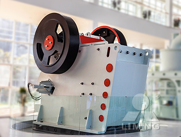
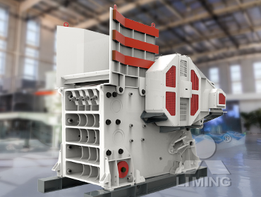

颚式破碎机是目前国际上广泛使用的破碎设备，通常用于各种矿石破碎的第一道工序，可将抗压强度不高于320MPa的大颗粒物料一次性加工至中等粒度，常与圆锥式破碎机、反击式破碎机、冲击式破碎机等一起构成整条砂石生产线。
发展历史
-

1806年,出现了用蒸汽机驱动的辊式破碎机。
-

1858年，美国人布莱克发明了破碎岩石的颚式破碎机，其结构形式为双肘板式（简单摆动式）。
-

1878年，美国发明了具有连续破碎动作的旋回破碎机。
-

20世纪50年代初，国内开始仿制生产复摆式破碎机。目前，广泛应用的是传统复摆式颚式破碎机。
工作原理
颚式破碎机破碎方式为曲动挤压型。工作时，电动机驱动皮带和皮带轮，通过偏心轴使动颚前后上下摆动，当动颚在偏心轴及肘板的作用下向定颚靠近时，物料被挤压、搓碾破碎；当动颚在偏心轴、弹簧的作用下离开定颚时，达到一定粒度要求的物料会从破碎腔下部出料口排出。在整个破碎过程中，动颚作周期性的压碎和排料运动，从而实现批量生产。
颚破家族
为满足不同的破碎需求，黎明重工共推出三款颚式破碎机：PE系列深腔颚式破碎机、PEW系列欧版颚式破碎机和C6X系列颚式破碎机。
其中PE1200×1500、PEW760、PEW860、PEW1100、C6X145和C6X160等型号销售火爆。
-

- 
- 